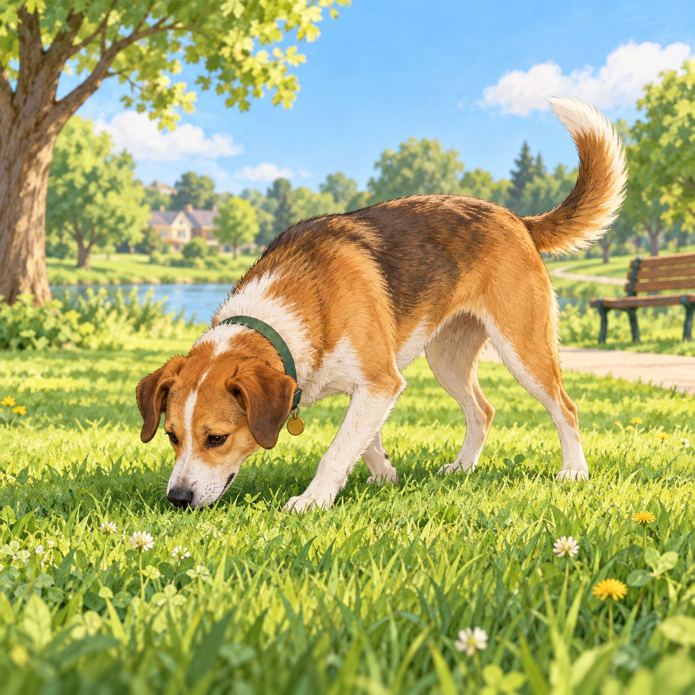
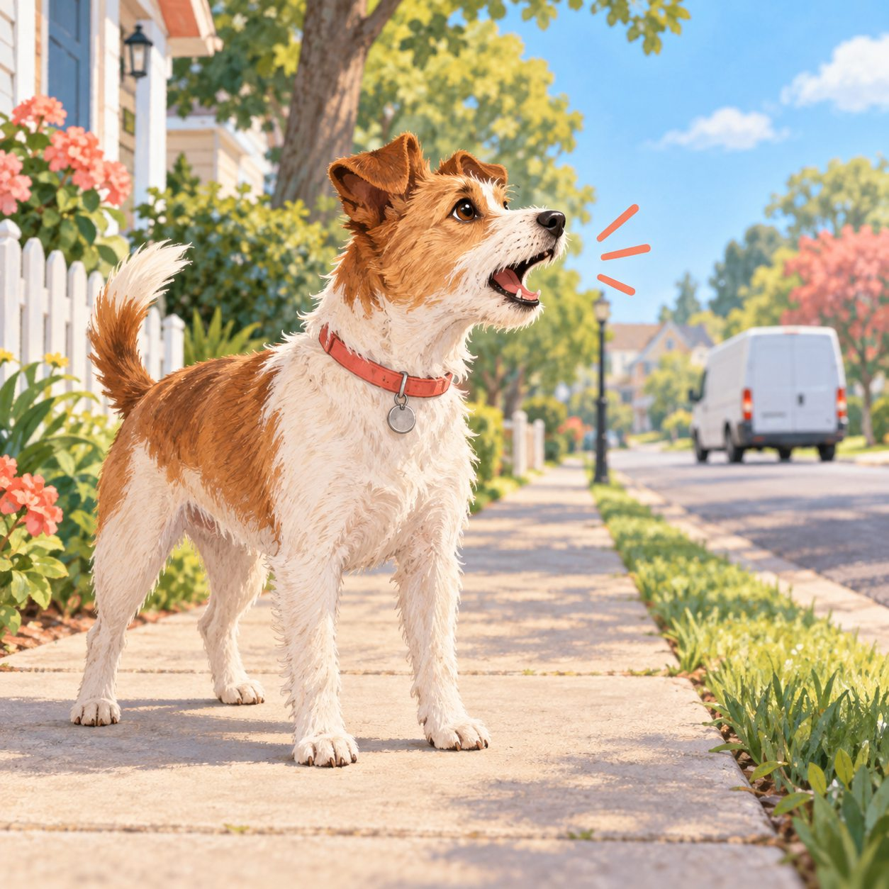
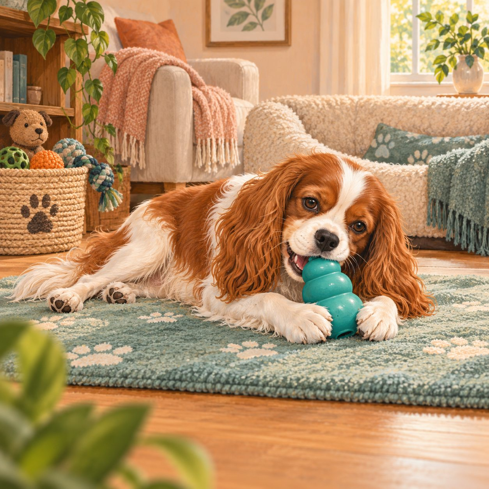
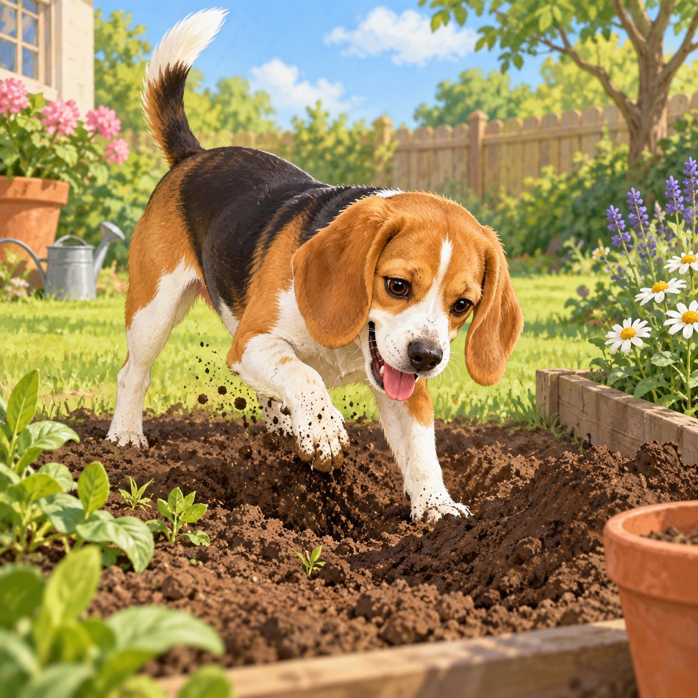
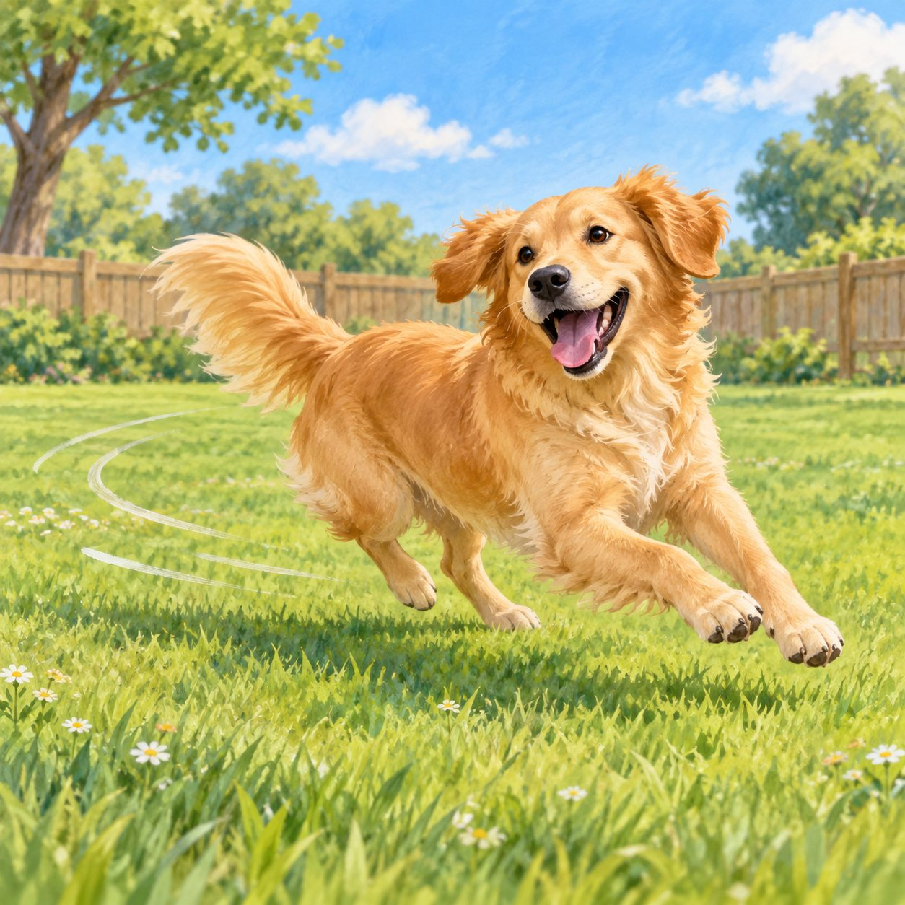
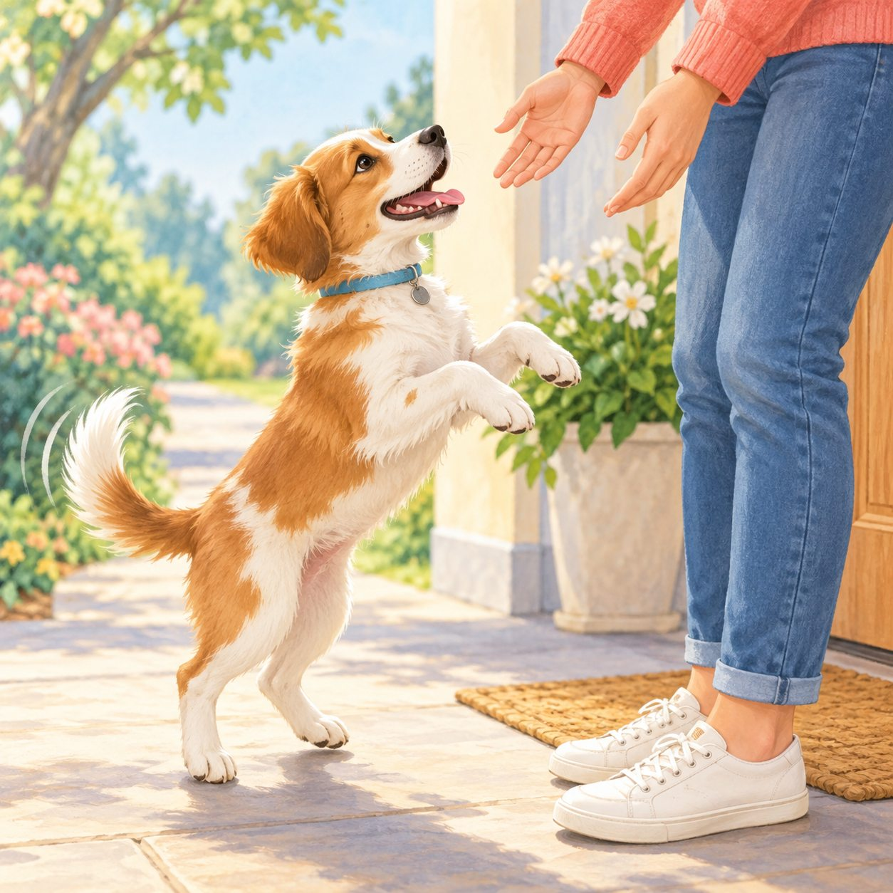
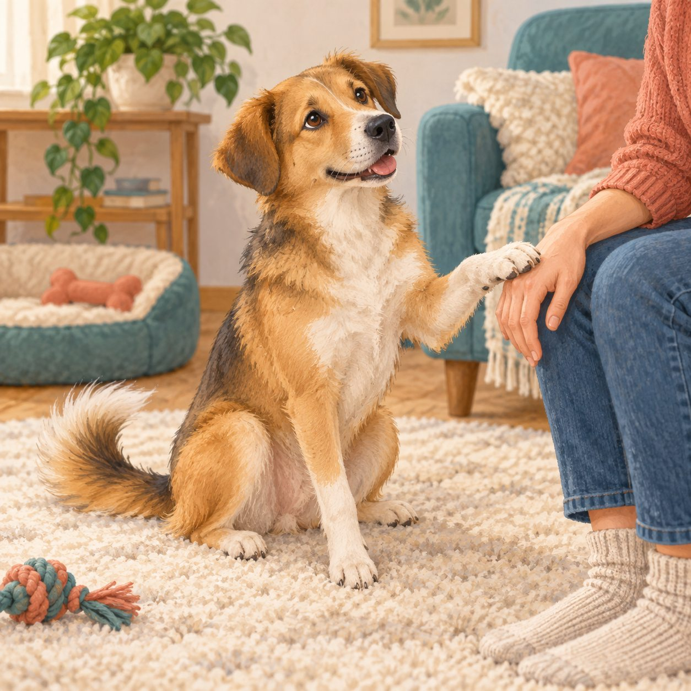
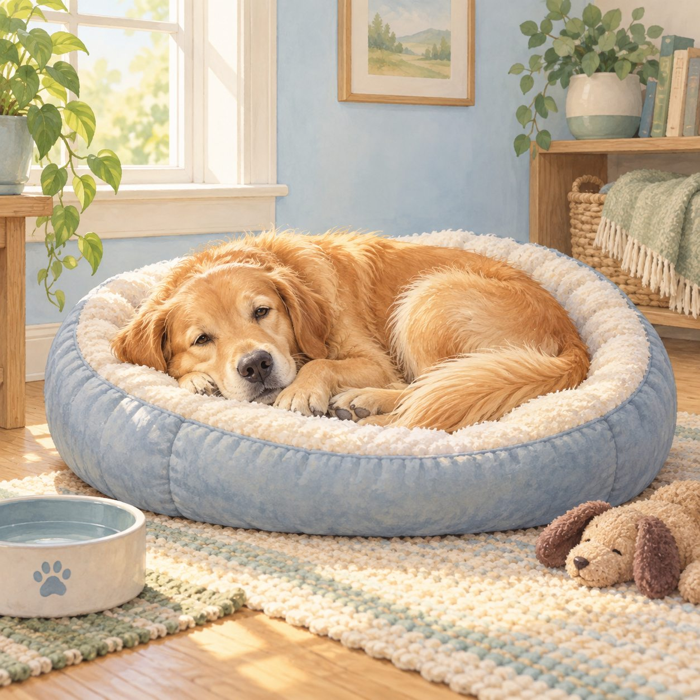

Sniffing & exploring
Nose work helps dogs learn about the world and can be calming enrichment.
Try: Give sniff walks time instead of rushing every stop.
Notice: Sudden frantic sniffing can also be a way to release pressure.

Barking & vocalizing
Barks can mean alert, excitement, frustration, fear, or a request for help.
Try: Check distance, trigger, rhythm, and recovery before responding.
Notice: Punishment may silence a warning without changing the feeling.

Chewing & shredding
Chewing is normal exploration and can help a dog settle when the outlet is safe.
Try: Trade unsafe items for an appropriate chew—never chase or grab.
Notice: A sudden increase may point to boredom, stress, or discomfort.

Digging
Dogs may dig to explore scent, cool down, bury treasure, play, or make an escape route.
Try: Offer a safe digging spot and reward choosing it.
Notice: Digging at doors or fences can signal urgency or a need for more support.

Zoomies
Fast loops and sudden sprints are often a normal release of energy or arousal.
Try: Clear hazards and let the run happen in a safe space.
Notice: Afterward, watch whether the body can settle, drink, and rest.

Jumping up
Jumping usually comes from excitement, a learned greeting, or wanting access to a person.
Try: Reward four paws on the floor and keep greetings calm and consistent.
Notice: Turning away is clearer and kinder than pushing the dog down.

Pawing & nudging
A paw or nose bump can ask for attention, access, play, food, or reassurance.
Try: Notice what happens next and teach a calmer way to ask.
Notice: A tense face or repeated nudging can mean the dog needs support, not more touch.

Resting & hiding
Choosing a bed, quiet corner, or hideaway is a healthy way to recover and regulate.
Try: Protect the rest spot and let your dog come back to you.
Notice: A sudden, persistent change in resting or social behavior deserves a health check.